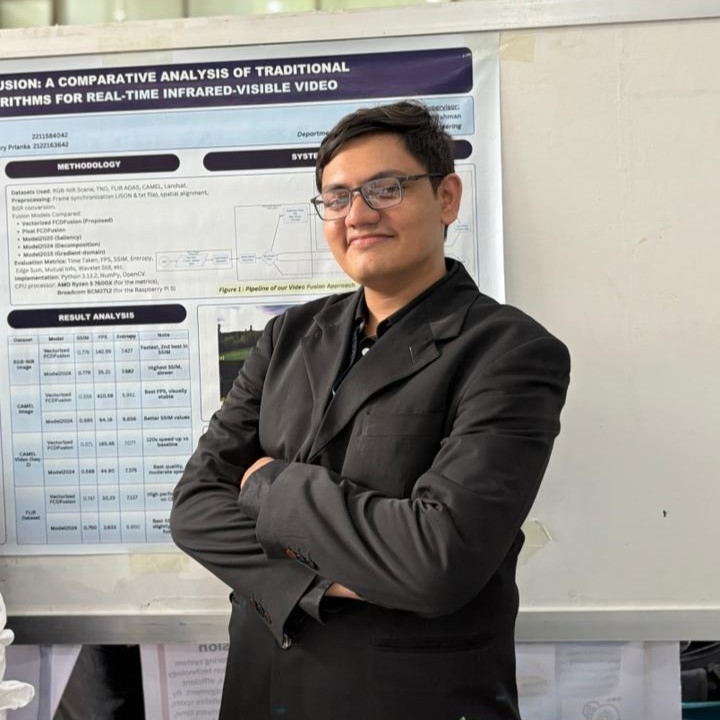
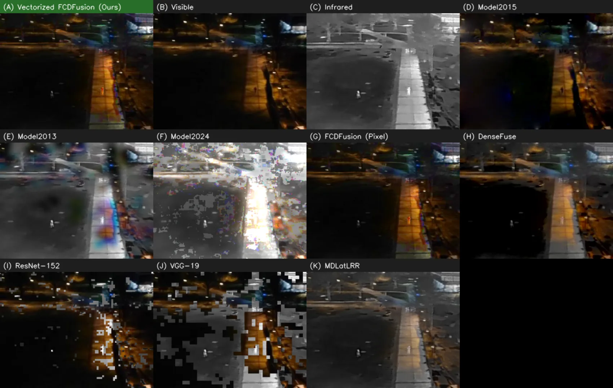

A scoping review of electric vehicle adoption barriers and policy gaps in South Asia
Published Discover Vehicles 2, 36 (Springer Nature), 2026. Co-author.
I collected and verified sources, wrote the conclusion and managed the references.

I make Computer-Vision methods run in real-time on CPU-only edge hardware, and I build benchmark pipelines which show where forgetting occurs in DL models.
Research Assistant at North South University, Dhaka. Applying for thesis-based MSc positions in Canada for Fall 2027.
My work stems from an experimental question: will the theory hold up to the experimental hardware and data? I reformulated an Infrared–Visible (VIS-IR) video fusion algorithm to run 46–106× faster in real-time on a CPU-only processor with identical output, designed a 155k-parameter vision transformer decolorizer which runs in real-time on a Raspberry Pi 5, and built a leakage-free pipeline which benchmarks and measures what continual-learning models forget in medical imaging.
I am interested in efficient and deployable Computer Vision, Image Processing, and Evaluation methods that survive contact with real deployment.
Published Discover Vehicles 2, 36 (Springer Nature), 2026. Co-author.
I collected and verified sources, wrote the conclusion and managed the references.


Accepted Cureus Journal of Computer Science (Springer Nature), 2026. First and corresponding author, with Prof. Dr. Rashedur M. Rahman.
A fully vectorized reformulation of FCDFusion that gives bit-identical output, plus a lightweight temporal score that exposes the flicker per-frame metrics miss. Nine fusion methods benchmarked under identical CPU-only conditions.
Paper [CUREUS URL TO BE ADDED] Code Data and demo videos

Manuscript Prepared for IEEE Access, 2026. First author, with Prof. Dr. Rashedur M. Rahman.
A 155k-parameter vision transformer reads a thumbnail and picks one of 16 learned weightings of four colour cues, keeping the speed of a fixed grey conversion while recovering contrast between colours of equal luminance.
Preprint [ARXIV URL, TO BE ADDED] Code Demo and logs

Manuscript Prepared for Medical Image Analysis, 2026. First author, with Ms. Silvia Ahmed.
Four medical tasks learned in sequence, with near-duplicate images removed across all tasks before any training. Twelve architectures, three seeds, and two external test sets that were never used in training.
Preprint [ARXIV URL, TO BE ADDED] Code Split manifests